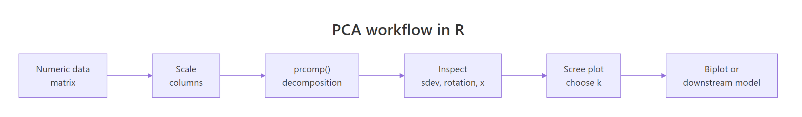
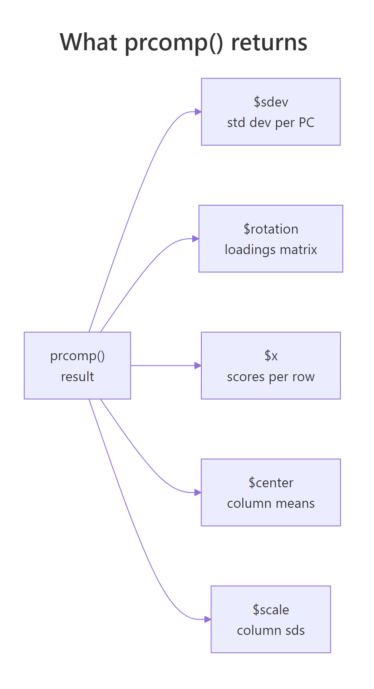
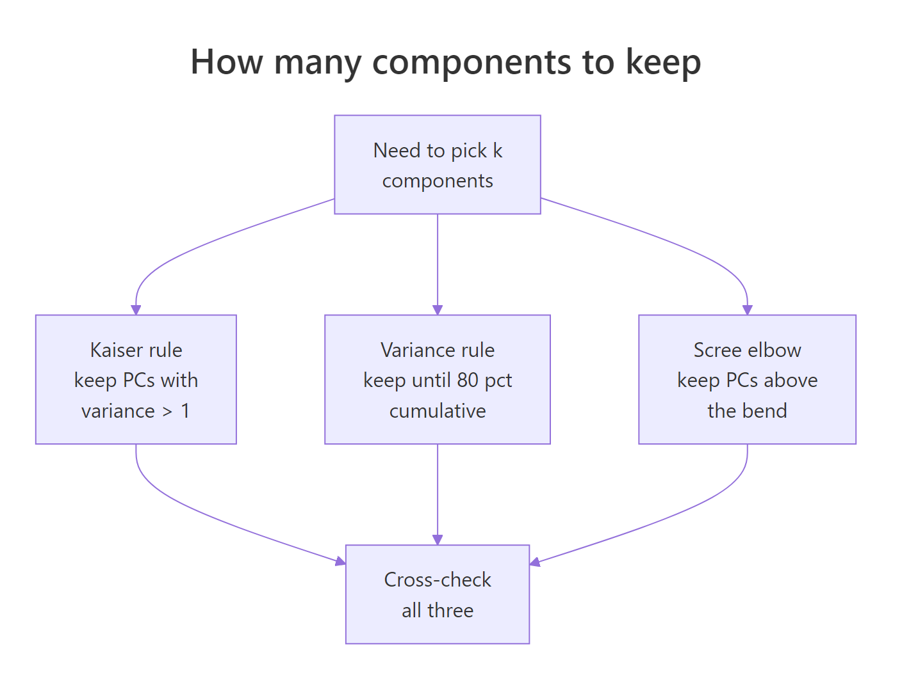
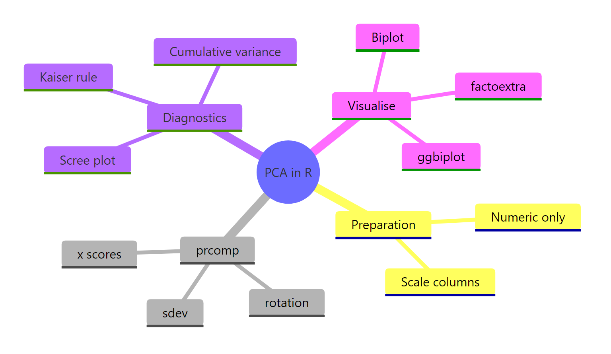

PCA in R: Reduce Dimensions, Visualise Structure, and Understand What prcomp() Returns
Principal Component Analysis (PCA) in R with prcomp() rotates your numeric columns into a smaller set of uncorrelated directions that capture as much variance as possible, so you can visualise, compress, or denoise multivariate data in a few lines of base R.
What is PCA in R and when should you reach for it?
PCA answers a practical question: when your data has many correlated numeric columns, which directions carry the most information? prcomp() ships with base R and does the heavy lifting in one call. Let's run it on USArrests, a built-in dataset with four crime-related columns across 50 US states, so you can see the payoff before we open the hood.
Two numbers in that summary do most of the interpretation work. The Proportion of Variance row says how much of the dataset's total variance each component absorbs: PC1 captures 62%, PC2 another 25%. The Cumulative Proportion row tells you when you have "enough" components: by PC2 you already explain 87% of the variance, which is why PCA is so useful for 2D plots. The remaining PC3 and PC4 carry little new information, so a two-component summary of these fifty states is genuinely faithful to the data.

Figure 1: The six-step PCA workflow in R, from raw matrix to biplot.
Try it: Run PCA on the numeric columns of mtcars (drop none, they're all numeric) with scaling on. What is the cumulative variance captured by PC1 and PC2? Fill the blank and compare against the expected output.
Click to reveal solution
Explanation: summary() returns an $importance matrix whose third row is the cumulative proportion. Indexing by column name reads PC2's cumulative variance directly.
What does prcomp() actually return?
prcomp() returns a list with five named slots. Each slot answers a specific question about the decomposition, so learning them once pays off every time you touch PCA. The structure is the same whether you pass four columns or four thousand.

Figure 2: The five slots returned by prcomp(): sdev, rotation, x, center, scale.
Read the output one slot at a time. $sdev is the standard deviation of each component; squaring it gives the variance (these are the eigenvalues). $rotation is a square matrix whose columns are the principal directions, also called loadings or eigenvectors. $x contains your data after rotation: fifty rows, one per state, now expressed in PC1-PC4 coordinates. $center and $scale store the column means and standard deviations used during preprocessing, which you'll need again when projecting new data.
pca$x = scale(data, pca$center, pca$scale) %*% pca$rotation holds exactly. Understanding this one line demystifies every other PCA plot you'll ever see.Try it: Look at PC2's loadings in the rotation matrix above. Which original variable has the largest absolute weight on PC2?
Click to reveal solution
Explanation: PC2 has a loading of -0.873 on UrbanPop, far larger in magnitude than the others. That tells us PC2 mostly measures how urban a state is, largely independent of violent-crime rates captured by PC1.
Why scale() before PCA? (and what happens if you don't)
PCA is entirely variance-driven, which means columns measured on larger numeric scales will automatically dominate the first component. Murder counts range roughly 0-18, but Assault counts range 45-337. Without scaling, the assault column's raw variance is hundreds of times larger than murder's, even though the underlying concepts are equally important.
Look at the unscaled column: Assault alone has a loading of -0.995, so PC1 is essentially "Assault, with rounding error." The scaled column spreads weight across all four crimes, which is what we actually want when the goal is to summarise overall crime patterns. The takeaway is blunt: unless every column is already measured in the same physical unit, set scale = TRUE.
scale = FALSE unless you change it. Passing scale. = TRUE (note the trailing dot in the canonical base R signature) is safe and recommended; prcomp() accepts both scale and scale. as aliases. Silent unscaled PCA is a top source of confused results in tutorials.If you're mathematically curious, scaling first is equivalent to decomposing the correlation matrix instead of the covariance matrix. The relationship is
$$\text{cor}(X) = D^{-1}\, \text{cov}(X)\, D^{-1}$$
Where:
- $X$ is the centred data matrix
- $D$ is a diagonal matrix of column standard deviations
- $D^{-1}$ undoes the units so each column contributes equal variance
If you're not interested in the math, skip to the next section. The scale = TRUE rule above is all you need.
Try it: Fit PCA on USArrests without scaling, then print PC1 loadings. Confirm Assault dominates.
Click to reveal solution
Explanation: Assault's raw variance dwarfs the others, so PC1 becomes an Assault proxy. Scaling re-centres the analysis on correlation structure rather than raw spread.
How do you read the scree plot and pick the number of components?
Every PCA report eventually asks: how many components should I keep? Three rules are widely used, they usually agree, and when they don't, agreement between any two of them is a reasonable tie-breaker.

Figure 3: Three complementary rules for choosing how many components to keep.
The three rules in order of strictness:
- Kaiser rule: keep every PC whose variance is at least 1. Applies only to scaled PCA, because variance-per-PC averages 1 when columns are standardised.
- Cumulative-variance rule: keep enough PCs to explain a preset share, typically 80% or 90% of total variance.
- Scree elbow: plot eigenvalues against component index, then retain the PCs before the visible "elbow" where the curve flattens.
Let's build a scree plot manually so you can see the numbers behind the picture.
The red dashed line at eigenvalue = 1 is the Kaiser cutoff. PC1 sits comfortably above it, PC2 sits almost exactly on it, and PC3-PC4 fall well below. All three rules then agree: keep two components. For USArrests that's also where the cumulative variance crosses 87%, a strong summary of a four-dimensional dataset in two coordinates.
If you'd rather not build the plot yourself, factoextra wraps the whole thing into one call.
fviz_eig() reports percentage of variance instead of raw eigenvalues, labels each bar, and produces a publication-ready figure without extra configuration. Use it when you want speed; use the manual version when you want to customise the colours, annotations, or the cutoff line.
factoextra may not run in the in-browser sandbox. It pulls in FactoMineR and ggrepel, which aren't always pre-installed in the runner that powers this page. If a factoextra cell errors, copy the code into local RStudio after install.packages("factoextra"). The base R biplot() and the manual ggplot2 scree plot above do the same job and always run in the browser.Try it: Use pca_arrests$sdev to count how many components satisfy the Kaiser rule.
Click to reveal solution
Explanation: Eigenvalues are sdev^2. Summing the logical vector counts how many clear the threshold. Two PCs clear it, matching the scree elbow and the 87% cumulative-variance mark.
How do you interpret loadings and biplots?
Loadings are the instruction sheet for what each component actually measures. A loading is a signed weight telling you how much each original variable contributes to a component, and the sign tells you direction. High values across Murder, Assault, and Rape on PC1 (all negative, same sign) means PC1 captures a "violent crime" axis; a strong negative weight on UrbanPop for PC2 means PC2 captures "how urban."
Reading column PC1: all four variables share the same sign (negative), and Murder, Assault, and Rape are close in magnitude while UrbanPop is weaker. That's a single "crime intensity" direction, dominated by the three violent-crime variables. PC2 tells a cleaner story: UrbanPop's loading is far larger than the rest, so PC2 is mostly "urbanisation" with small crime-mix corrections. States with large negative PC2 scores are highly urban regardless of their crime profile.
A biplot puts the loadings and the scores on the same canvas so you can read both at once. Arrows show loadings (the rotation columns), points show scores (rows projected onto PCs), and arrow angles approximate correlations between original variables.
scale = 0 tells biplot() to plot raw scores and raw loadings, which keeps geometric interpretation honest. Arrow direction shows which end of the PC is "high" for that variable, arrow length shows how strongly a variable drives the first two PCs, and the angle between two arrows roughly tracks their correlation (small angle = positively correlated, right angle = uncorrelated, opposite = negatively correlated).
fviz_pca_biplot() handles label collision with repel = TRUE, supports colour-by-group via habillage, and generally produces a better-looking figure than base R. Use it for reports; keep base biplot() in mind for quick sanity checks.
$rotation while preserving all interpretations. If a reviewer asks why your PC1 points "the wrong way", you can multiply both the rotation column and the corresponding score column by -1 without changing anything substantive.Try it: Find the state with the highest PC1 score (recall PC1 is negative for high-crime states, so the lowest PC1 score is the highest-crime state).
Click to reveal solution
Explanation: Scores live in $x, rownames carry the state labels. PC1 is signed so that negative values indicate high crime; Florida has the most negative PC1 in the 1973 USArrests snapshot.
How do you use PCA output in downstream work?
Once you trust a PCA fit, you can use its scores anywhere you'd normally use the original columns: as axes for scatter plots, as predictors in a regression, or as inputs to clustering. The one trick is projecting new data onto the same components, which the predict() method handles correctly as long as you pass the original prcomp object.
The model isn't interesting in itself (UrbanPop is already one of the inputs), but the pattern is the point: PCs are just columns, and they drop into lm(), glm(), or randomForest() the same way any numeric predictor would. This trick is called principal-components regression and it's useful when you have many correlated predictors that would otherwise cause multicollinearity.
Projecting new observations onto existing PCs is a one-liner with predict.prcomp(), but there's a pitfall: the new observation must be scaled with the same centring and scaling used during fitting. Storing the original prcomp object takes care of that automatically.
predict(pca_arrests, newdata = new_state) does three things under the hood: subtracts the stored column means, divides by the stored column sds, then multiplies by $rotation. That guarantees Newland lands in the same coordinate system as the original 50 states, so you can plot it on the same biplot, cluster it with the same distance metric, or feed it into the same downstream model.
saveRDS() preserves $center and $scale automatically. If you store only the rotation matrix, you'll forget the scaling constants and your production scores will silently shift.Try it: Project a second hypothetical state onto the existing PCs and pull out only its PC1 score.
Click to reveal solution
Explanation: A low-crime, medium-urban hypothetical state sits on the positive side of PC1, the opposite end from Florida. The positive score confirms the earlier read of PC1 as an inverse violent-crime axis.
Practice Exercises
Apply the full PCA workflow end-to-end. Use distinct variable names (all prefixed my_) so tutorial variables stay intact.
Exercise 1: Full PCA workflow on mtcars
Fit PCA on mtcars with scaling, decide how many components to keep using the 80% cumulative-variance rule, and print the first three rows of scores for your retained PCs. Save scores to my_scores.
Click to reveal solution
Explanation: summary()$importance[3, ] is the named cumulative-variance vector. which(... >= 0.80)[1] returns the first index crossing the threshold, which is PC2 for mtcars. Two components capture 84% of variance and suffice by the 80% rule.
Exercise 2: Scaled vs unscaled comparison
Fit PCA on USArrests with and without scaling. Correlate the absolute PC1 loadings between the two fits. If the correlation is far from 1, scaling genuinely changed which variables dominate. Save the correlation to my_load_cmp.
Click to reveal solution
Explanation: A correlation of 0.17 means the scaled and unscaled fits barely agree on what PC1 is. The unscaled fit has PC1 loaded almost entirely on Assault; the scaled fit balances all four crimes. This is exactly why scaling is the default choice unless every column shares the same physical unit.
Exercise 3: Biplot-driven interpretation on iris
Fit PCA on the four numeric columns of iris, draw a biplot coloured by Species, and report which two variables are most aligned with PC1 (largest absolute PC1 loadings). Save the result to my_iris_pca.
Click to reveal solution
Explanation: Petal measurements dominate PC1 for iris, which is why PC1 alone separates setosa from the other two species. The biplot makes this visual: setosa sits at one end of the petal arrows, virginica at the other, versicolor in between.
Complete Example
Here's an end-to-end PCA pipeline on the decathlon2 dataset (results from two decathlon competitions, shipped with factoextra). We'll scale, fit, pick a k, and interpret the biplot.
The first two components explain 60% of variance and four reach the 80% mark, so k = 4 is a defensible choice by cumulative-variance; k = 2 is fine for a quick visual. On the biplot, running events (100m, 400m, hurdles) cluster together and point opposite to throwing events (shot put, discus), because strong runners are usually lean and strong throwers are usually heavy, so the two event families trade off along PC1. PC2 separates jumpers from throwers, which is the second most important pattern in the data.
Summary
Four steps carry you from raw matrix to interpretable summary.

Figure 4: PCA in R at a glance: preparation, prcomp slots, diagnostics, and visualisations.
| Function | Purpose |
|---|---|
prcomp(data, scale = TRUE) |
Fit PCA via SVD; almost always pass scale = TRUE |
summary(pca) |
Variance explained, per-PC and cumulative |
pca$sdev |
Square to get eigenvalues; Kaiser rule uses these |
pca$rotation |
Loadings (columns are eigenvectors of the correlation matrix) |
pca$x |
Scores: rows projected onto PCs, ready for plotting |
predict(pca, newdata) |
Project new rows onto existing components with stored centring and scaling |
fviz_eig(pca) |
One-call scree plot via factoextra |
fviz_pca_biplot(pca) |
Publication-ready biplot with label repelling and group colouring |
Retain components by triangulating three rules (Kaiser, 80% cumulative, scree elbow) and favour interpretability when they disagree. Save the full prcomp object so centring and scaling travel with your pipeline; don't reinvent them from notes.
References
- R Core Team.
prcompreference in thestatspackage. Link - James, G., Witten, D., Hastie, T., Tibshirani, R. An Introduction to Statistical Learning with Applications in R, Chapter 12 on Unsupervised Learning. Link
- Hotelling, H. "Analysis of a complex of statistical variables into principal components." Journal of Educational Psychology, 24 (6), 417-441 (1933).
- Pearson, K. "On lines and planes of closest fit to systems of points in space." Philosophical Magazine, 2 (11), 559-572 (1901).
- Kassambara, A. & Mundt, F.
factoextrapackage: extract and visualise the results of multivariate data analyses. Link - Robinson, D. & Hayes, A.
broom::tidy.prcomptidy PCA output. Link - Wickham, H., Cetinkaya-Rundel, M., Grolemund, G. R for Data Science, 2nd Edition. Link
- STHDA. Principal Component Methods in R: Practical Guide. Link
Continue Learning
- Multivariate Statistics in R: Distances, Mahalanobis, and Hotelling's T²: how correlation structure changes multivariate thinking.
- Correlation in R (Pearson, Spearman, Kendall): the building block behind PCA's covariance and correlation matrices.
- Outlier Detection in R: PCA is a standard tool for spotting multivariate outliers via reconstruction error.